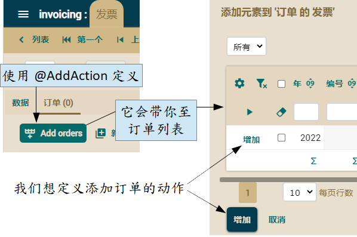

public class Order extends CommercialDocument {
@ManyToOne
@ReferenceView("NoCustomerNoOrders")
@OnChange(ShowHideCreateInvoiceAction.class)
@OnChangeSearch(OnChangeSearchInvoiceAction.class) // 添加此注解
@SearchAction("Order.searchInvoice")
Invoice invoice;
...
}
package com.yourcompany.invoicing.actions; // 在 actions 包
import java.util.*;
import org.openxava.actions.*; // 用于使用 OnChangeSearchAction
import org.openxava.model.*;
import org.openxava.view.*;
import com.yourcompany.invoicing.model.*;
public class OnChangeSearchInvoiceAction
extends OnChangeSearchAction { // 当搜索参照而用户界面中的键值有变化时的标准逻辑 (1)
public void execute() throws Exception {
super.execute(); // 它执行标准逻辑(2)
Map keyValues = getView()// getView() 这里是参照的视图，不是主视图 (3)
.getKeyValuesWithValue();
if (keyValues.isEmpty()) return; // 如果 key 为空，则不执行额外的逻辑
Invoice invoice = (Invoice) // 我们从输入的键搜索 Invoice 实体 (4)
MapFacade.findEntity(getView().getModelName(), keyValues);
View customerView = getView().getRoot().getSubview("customer"); // (5)
int customerNumber = customerView.getValueInt("number");
if (customerNumber == 0) { // 如果没有客户，我们填 (6)
customerView.setValue("number", invoice.getCustomer().getNumber());
customerView.refresh();
}
else { // 如果已经有客户，我们验证他是否跟发票的客户匹配 (7)
if (customerNumber != invoice.getCustomer().getNumber()) {
addError("invoice_customer_not_match",
invoice.getCustomer().getNumber(), invoice, customerNumber);
getView().clear();
}
}
}
}
为了实现上图的行为，动作会询问是否没有客户 (customberNumber == 0) (6)。如果是这种情况，它会从发票的客户中填写客户。否则，它会执行上图中的逻辑，以验证当前订单的客户是否与发票的客户匹配。
最后的细节是消息。将以下条目添加到 src/main/resources/i18n 文件夹中的 invoicing-messages_zh.properties 文件。
invoice_customer_not_match=发票 {1} 的客户编号 {0} 与当前订单的客户编号 {2} 不匹配
优化集合的行为
我们可以像优化参照一样优化集合。这非常有用，因为它允许我们改进 Invoice 模块当前的行为。如果发票和订单属于同一客户，用户才能将订单添加到发票中。此外，订单必须已送达，并且必须没有发票。优化将元素添加到集合的列表
当前，当用户想将订单添加到发票时，所有订单都可选取。我们将对此进行改进，以仅显示该发票的客户的订单，并且已送达而尚未开发票，如下图所示：
我们将使用@AddAction 注解来定义我们自己的动作以显示添加订单的列表。以下代码是 Invoice 类中所需的修改。
public class Invoice extends CommercialDocument {
@OneToMany(mappedBy="invoice")
@CollectionView("NoCustomerNoInvoice")
@AddAction("Invoice.addOrders") // 定义我们的添加订单的动作
Collection<Order> orders;
...
}
现在我们必须编辑 controllers.xml 以添加 Invoice 控制器和新动作：
<controller name="Invoice">
<extends controller="Invoicing"/>
<action name="addOrders"
class="com.yourcompany.invoicing.actions.GoAddOrdersToInvoiceAction"
hidden="true" icon="table-row-plus-after"/>
<!--
hidden="true" : 因为我们不希望动作显示在模块的按钮栏中
icon="table-row-plus-after" : 与标准動作相同的图标
-->
</controller>
package com.yourcompany.invoicing.actions; // 在 actions 包
import org.openxava.actions.*; // 用于使用 GoAddElementsToCollectionAction
public class GoAddOrdersToInvoiceAction
extends GoAddElementsToCollectionAction { // 到列表的标准逻辑（将元素添加到集合的列表）
public void execute() throws Exception {
super.execute(); // 它执行标准逻辑，显示一个对话框
int customerNumber =
getPreviousView() // getPreviousView() 是主视图（我们在一个对话框中）
.getValueInt("customer.number"); // 读取当前发票视图的客户编号
getTab().setBaseCondition( // 要添加的订单列表的条件
"${customer.number} = " + customerNumber +
" and ${delivered} = true and ${invoice} is null"
);
}
}
优化将元素添加到集合的动作
对订单集合一个优化是，当用户将订单添加到当前发票时，这些订单的详情会自动复制到发票中。我们在此无法使用 @AddAction，因为它用于显示添加至集合的元素列表。但并不是添加元素的动作。
在这节我们将学到如何定义添加元素的动作：

不幸的是，没有直接定义此“添加”动作的注解。然而，这并不是很难的任务，我们只需要改进 @AddAction，让它显示我们想要的控制器，并在这个控制器中放置我们想要的动作。由于我们已经在上一节中定义了 @AddAction，我们只需在已存在的 GoAddOrdersToInvoiceAction 类添加一个新方法。将以下 getNextController() 方法添加到您的动作中：
public class GoAddOrdersToInvoiceAction ... {
...
public String getNextController() { // 添加这个方法
return "AddOrdersToInvoice"; // 具有动作的控制器（添加订单列表中的动作）
}
}
<controller name="AddOrdersToInvoice">
<extends controller="AddToCollection" /> <!-- 从标准控制器扩展 -->
<!-- 覆盖 add 的动作 -->
<action name="add"
class="com.yourcompany.invoicing.actions.AddOrdersToInvoiceAction" />
</controller>
package com.yourcompany.invoicing.actions; // 在 actions 包中
import java.rmi.*;
import java.util.*;
import javax.ejb.*;
import org.openxava.actions.*; // 用于使用 AddElementsToCollectionAction
import org.openxava.model.*;
import org.openxava.util.*;
import org.openxava.validators.*;
import com.yourcompany.invoicing.model.*;
public class AddOrdersToInvoiceAction
extends AddElementsToCollectionAction { // 将元素添加集合的标准逻辑
public void execute() throws Exception {
super.execute(); // 我们如实使用标准逻辑
getView().refresh(); // 用于显示新数据，包括重新计算的税额等
}
protected void associateEntity(Map keyValues) // 用於关联的方法，在本例中将每个订单关联到发票
throws ValidationException,
XavaException, ObjectNotFoundException,
FinderException, RemoteException
{
super.associateEntity(keyValues); //它执行标准逻辑 (1)
Order order = (Order) MapFacade.findEntity("Order", keyValues); // (2)
order.copyDetailsToInvoice(); // 将主要工作委托给实体 (3)
}
}
现在您只需新建发票、选择客户并添加订单。它甚至比使用订单模块的列表模式更容易，因为在发票模块中只会显示该客户的订单。
总结
本章向您展示如何优化参照和集合的标准行为，让应用程序满足用户的需求。在此您只看到一些示例，但 OpenXava 为集合和参照提供了更多优化的可能性，例如使用以下的注解：@ReferenceView、@ReadOnly、@NoFrame、@NoCreate、@NoModify、@NoSearch、@AsEmbedded、@SearchAction、@DescriptionsList、@LabelFormat、@Action、@OnChange、@OnChangeSearch、@Editor、@CollectionView、@EditOnly、@ListProperties、@RowStyle、@EditAction、@ViewAction、@NewAction、@SaveAction、@HideDetailAction、@RemoveAction、@RemoveSelectedAction、@ListAction、@DetailAction 和 @OnSelectElementAction。请查看参照自定义跟集合自定义的指南。如果这还不够，您可以选择为参照或集合定义专属编辑器 。编辑器允许您创建自定义的用户界面组件以显示和编辑参照或集合。
这种灵活性允许您在面对现实生活中的业务应用程序时能自动生成大多所需的用户界面。